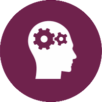

Hello Everyone!
I have graduated from University of Macedonia,Department of Applied Informatics and I'am an under construction Web Developer!
My moto is keep learning to achieve all your goals.
My Skills.

Design and Development
I started learning programming when I was in high school!I've knowledge of Java,C,HTML,CSS,JS & my main goal is to learn even more to become a good web developer.I think it's an interesting branch in which you can develop many different projects.
More About Me
I value clarity, kindness, and honesty above all else. These ideals guide my approach to problem solving and life in general.Outside of work I enjoy travel,painting, photography, and reading psychology and self improvement books .